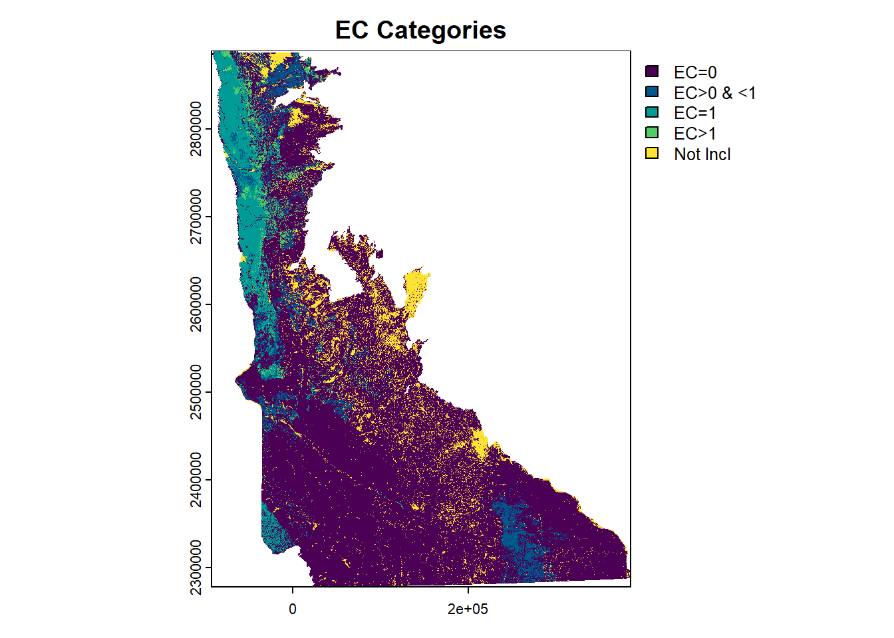
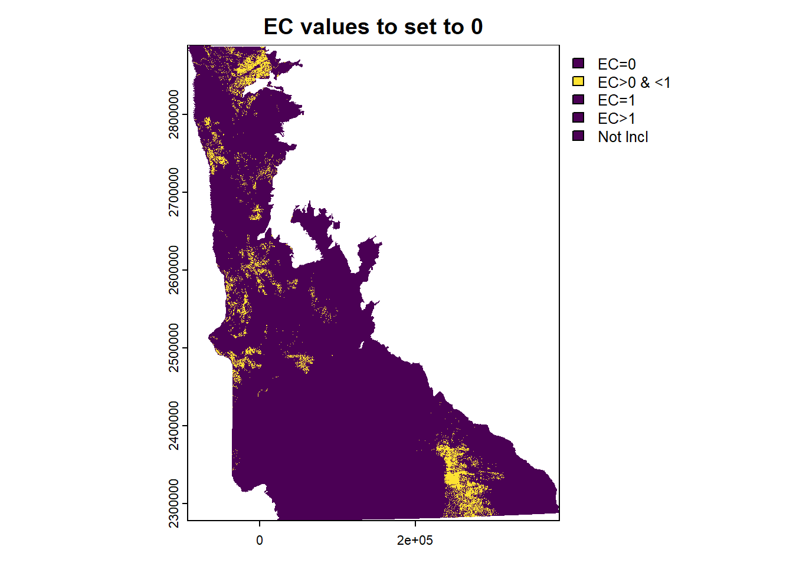
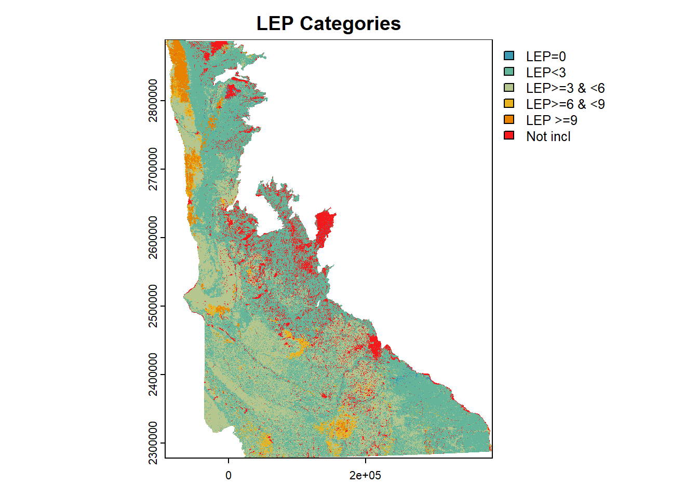
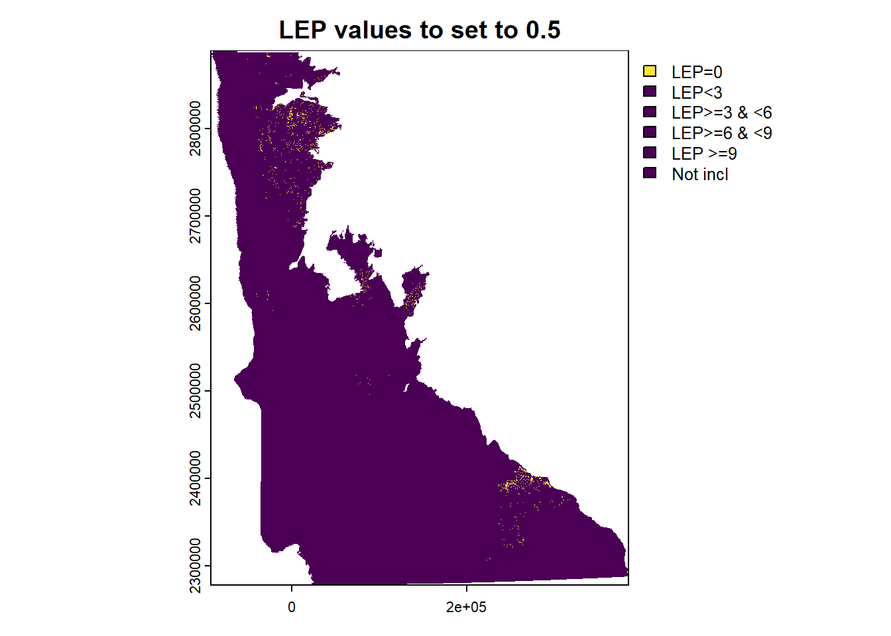

library(readr)
library(dplyr)
library(terra)
# gssurgo raster, clipped to AOI and simple MUKEYs to reduce size
r <- rast("data/gSSURGO_MN/MapunitRaster_10m_Clip1_and_Reclass/MapunitRaster_10m_Clip1_and_Reclass/Reclass_tif1.tif")
# allows us to translate our "new" (shorter) MUKEYs to the
# originals that match up with the rest of the db
aoi_mu <- read.delim("data/gSSURGO_MN/mukey_new_crosswalk.txt", sep = ",") %>%
select(MUKEY, MUKEY_New, Count)8 MAP EC and LEP with {terra}
8.1 Overview
This chapter serves two main purposes:
- visualize distributions of EC and LEP values, to help make a decision about how to deal with unlikely values (LEP = 0) or very low / agronomically unimportant values (EC between 0-1).
- Do a test run of the raster reclass process with
{terra}
8.2 Load packages and data
I’ll be using the {terra} package, which is for working with raster data. When I started this project, I created the initial AOI raster in QGIS and modified in ArcGIS, but am hoping to do more in R so it can be documented as part of this workflow.
I created these keys for assigned EC category and LEP category in Chapter 7 .
# to make a thematic EC map
ec_cat <- read_csv("data/ec_category_mukey.csv") %>%
full_join(., aoi_mu, by = c("mukey" = "MUKEY")) %>%
mutate(ec_cat = case_when(
is.na(ec_cat) ~ 5,
TRUE ~ ec_cat
))Rows: 6912 Columns: 3
── Column specification ────────────────────────────────────────────────────────
Delimiter: ","
dbl (3): mukey, ec_r_value, ec_cat
ℹ Use `spec()` to retrieve the full column specification for this data.
ℹ Specify the column types or set `show_col_types = FALSE` to quiet this message.lep_cat <- read_csv("data/lep_category_mukey.csv")%>%
full_join(., aoi_mu, by = c("mukey" = "MUKEY")) %>%
mutate(lep_cat = case_when(
is.na(lep_cat) ~ 5,
TRUE ~ lep_cat
))Rows: 6912 Columns: 3
── Column specification ────────────────────────────────────────────────────────
Delimiter: ","
dbl (3): mukey, lep_r_value, lep_cat
ℹ Use `spec()` to retrieve the full column specification for this data.
ℹ Specify the column types or set `show_col_types = FALSE` to quiet this message.8.3 SpatRaster object
Look at how our raster object appears in R.
rclass : SpatRaster
dimensions : 61033, 47668, 1 (nrow, ncol, nlyr)
resolution : 10, 10 (x, y)
extent : -91855, 384825, 2278555, 2888885 (xmin, xmax, ymin, ymax)
coord. ref. : NAD_1983_Albers
source : Reclass_tif1.tif
name : Reclass_tif1
min value : 0
max value : 7861 8.4 Tables to re-classify cell values
First, try making a thematic map with the EC categories I loaded above. Will use terra::classify() to assign new values to my raster cells. Need to supply a two-column matrix for the reclass, with “from” (first column) and “to” (second column) values.
# 7999 is the missing data value
ec_mx <- ec_cat %>%
select(MUKEY_New, ec_cat) %>%
add_row(MUKEY_New = 7999, ec_cat = 5) %>%
as.matrix()I’m going to do one for LEP too:
# 7999 is the missing data value
lep_mx <- lep_cat %>%
select(MUKEY_New, lep_cat) %>%
add_row(MUKEY_New = 7999, lep_cat = 5) %>%
as.matrix()8.5 Raster reclass process
!! Note that I have set this chunk option eval: false to make sure this doesn’t run again when I render the project (because it takes so long). In my _quarto.yml I have the execute option freeze: auto set, which typically would mean that code is only re-run if I have changed the source. I want to avoid that behavior here, because I’m fiddling around with the source, but don’t need this test to run again.
Also, it is important to supply the filename argument here to write the file. Otherwise, it will throw an error related to “insufficient disk space”, because terra is trying to save the reclassed raster as a temp file. For more info, read this issue terra’s github repo.
Recall that 1 byte = 8 bits = 2^8 (256) unique numbers, so the datatype = "INT2U" below means “integer, 2 bytes, unsigned”. Back when I was dealing with the big raster size due to MUKEY values (see Section 1.6.3 ), I reclassed the raster in ArcGIS to allow us to use 16-bit encoding. 16-bit would be 2 bytes so I think I should be able to stick with that for saving this EC raster.
###### RECLASS for EC -------------------------------
# this took a LONG time (50 minutes??)
start_reclass <- Sys.time()
r_reclass <- classify(x = r,
rcl = ec_mx,
filename = "E:/big-files-backup/ch03-sh-groups/ec_reclass.tif",
datatype = "INT2U",
overwrite = TRUE)
end_reclass <- Sys.time()
start_reclass - end_reclass
###### RECLASS for LEP -------------------------------
start_reclass <- Sys.time()
r_reclass <- classify(x = r,
rcl = lep_mx,
filename = "E:/big-files-backup/ch03-sh-groups/lep_reclass.tif",
datatype = "INT2U",
overwrite = TRUE)
end_reclass <- Sys.time()
start_reclass - end_reclass8.5.1 A note about file size
After I saved this new raster, I checked the file size and it came to 0.1070863 GB (not bad!). I’d like to figure out how to make it go faster (if possible), but right now that’s not my first priority.
8.6 Visualize re-classed rasters
8.6.1 Read in .tifs
Reminder of what EC cell values mean:
- 1: EC is 0
- 2: EC is >0, but <1
- 3: EC = 1
- 4: EC > 1
- 5: NA value (meaning we are not including that area)
Note the min and max values here (1 and 5). This means that I successfully reclassed all my raster values.
ec_rast <- rast("E:/big-files-backup/ch03-sh-groups/ec_reclass.tif")
ec_rastclass : SpatRaster
dimensions : 61033, 47668, 1 (nrow, ncol, nlyr)
resolution : 10, 10 (x, y)
extent : -91855, 384825, 2278555, 2888885 (xmin, xmax, ymin, ymax)
coord. ref. : NAD_1983_Albers
source : ec_reclass.tif
name : Reclass_tif1
min value : 1
max value : 5 Reminder of what LEP cell values mean:
- 0: LEP = 0
- 1: Low LEP <3
- 2: Moderate LEP >=3 & <6
- 3: High LEP>= 6 & <9
- 4: Very high LEP >= 9
- 5: NA value (meaning we are not including that area)
lep_rast <- rast("E:/big-files-backup/ch03-sh-groups/lep_reclass.tif")
lep_rastclass : SpatRaster
dimensions : 61033, 47668, 1 (nrow, ncol, nlyr)
resolution : 10, 10 (x, y)
extent : -91855, 384825, 2278555, 2888885 (xmin, xmax, ymin, ymax)
coord. ref. : NAD_1983_Albers
source : lep_reclass.tif
name : Reclass_tif1
min value : 0
max value : 5 8.6.2 Plot troubleshooting
Had issues with getting the colors to work in this plot, this gis.stackexchange thread was helpful.
I had to update my version of terra, I had 1.4.XX, the method for doing colors described at the link above requires 1.5.50 or higher.
When I run this interactively, I get error messages (below), but the plot still appears. This seems to be a known issue, potentially related to garbage collection. Can follow this issue for more details, last updated 2022-09-20 (very recent). This is the error:
Error in x$.self$finalize() : attempt to apply non-function
8.6.3 EC Plot
Nic and I explored these rasters in QGIS on 2022-09-19, and decided that anything with EC >0 but <1 should be set to 0. As you can see on the plots below, there are some weird artefacts in SE Minnesota that are showing up with measured EC values, even though surrounding areas are all 0. Because there are parts of NW Minnesota that also have EC values in this range, it’s possible that this decision will create some weirdness in that part of the map. Check this out in the final clustering outputs.
mycols <- data.frame(values = c(1:5), cols = hcl.colors(5, palette = "viridis"))
coltab(ec_rast) <- mycols
plot(ec_rast, col = mycols, plg=list(legend = c("EC=0", "EC>0 & <1", "EC=1", "EC>1", "Not Incl")), main = "EC Categories")
And a plot to highlight just the areas where EC will be set to zero:
lowec_col_only <- data.frame(values = c(1:5),
cols = c("#4B0055","#FDE333", "#4B0055", "#4B0055", "#4B0055"))
plot(ec_rast, col = lowec_col_only, plg=list(legend = c("EC=0", "EC>0 & <1", "EC=1", "EC>1", "Not Incl")), main = "EC values to set to 0")
8.6.4 LEP Plot
lepcols <- data.frame(values = c(0:5), cols = hcl.colors(6, palette = "Zissou 1"))
coltab(lep_rast) <- lepcols
plot(lep_rast, col = lepcols, plg=list(legend = c("LEP=0", "LEP<3", "LEP>=3 & <6", "LEP>=6 & <9", "LEP >=9", "Not incl")), main = "LEP Categories")
And a plot to highlight only the areas with LEP = 0, these will be set to 0.5 (the low end of the lowest category). We made this decision because the LEP=0 areas are discontinuous across counties, and not very prevalent across the state. Suspect this is not a measured value.
lepz_col_only <- data.frame(values = c(0:5),
cols = c("#FDE333","#4B0055", "#4B0055", "#4B0055", "#4B0055", "#4B0055"))
plot(lep_rast, col = lepz_col_only, plg=list(legend = c("LEP=0", "LEP<3", "LEP>=3 & <6", "LEP>=6 & <9", "LEP >=9", "Not incl")), main = "LEP values to set to 0.5")